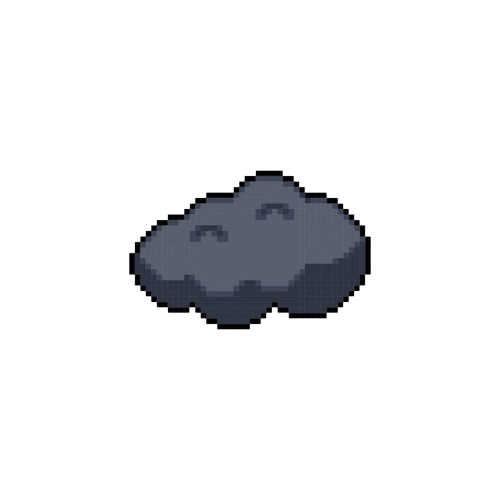

I like to do stuff, what kind of stuff? STUFF
For example, I enjoy nature walks, the sun, a gentle breeze, little insects, and the weather. I find that a nice walk can be quite rejuvenating and relaxing.
Casual weight lifting is another thing I enjoy. I honestly don’t care about losing weight or gaining muscles but I just find the simple act of lifting a lighter weight while listening to music to grant some sort of euphoria that makes me forget all about my worries.
I enjoy more simpler kind of humor, whether crude or innocent. Sometimes I like making more
intellectual Jokes that use certain references. that or it’s just a word that makes me laugh, a single word, because at the moment I am so brain dead, anything will make me laugh.
When it comes to me, myself, and I. Some would say many different things about me.
but a lot of people would just ask, Who?
My friends would describe me as playful, sometimes overbearing, admirable in some ways and disgraceful in others,
Although a bit spaced out every now and then, people I'm close to will call me somewhere between competent to genius. But being honest, intelligence is relative and the only compliment I truly accept from my friend is whenever they call me goof person
Teachers however, They’ll tend to think many things but mostly that i’m a good but i’ll either get carried away or lack any motivation